In this post
- What to do, if you are in a desperate need of matching this particular image pair?
- What are the limitations of the affine-covariant detectors like Hessian-Affine or HesAffNet?
- ASIFT: brute-force affine view synthesis
- Do as little as possible: MODS
- What is the key factor of affine view synthesis? Ablation study
How to match images taken from really extreme viewpoints?
Standard wide-baseline stereo or 3d reconstruction pipelines work well in the many situations. Even if some image pair is not matched, it is usually not a problem. For example, one could match images from very different viewpoints, if there is a sequence of images in between, as shown in Figure below, from “From Single Image Query to Detailed 3D Reconstruction” paper.
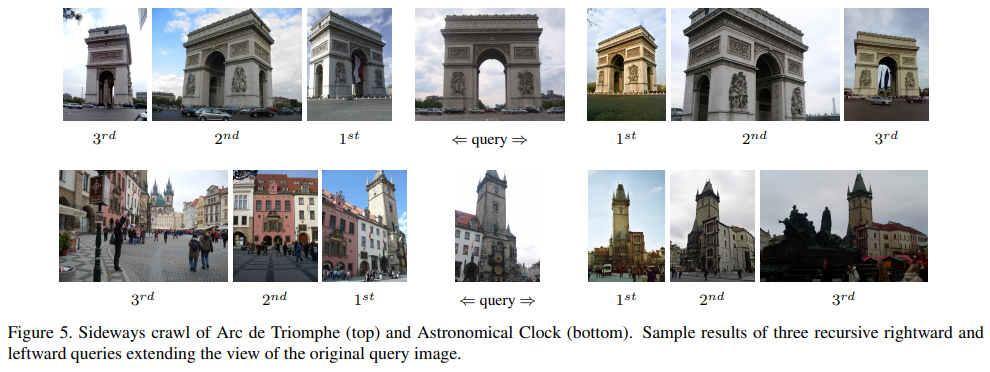
However, that might not always be possible. For example, the number of pictures is limited because they historical and there is no way how one could go and take more without inventing a time machine.
What to do? One way would be to use affine features like Hessian-AffNet or MSER. However, they help only up to some extent and what if the view, we need to match are more extreme?
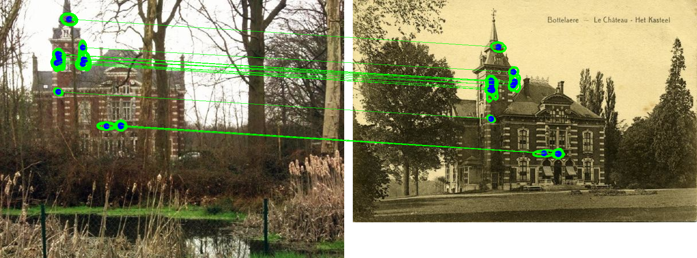
The image pair above is from “Location recognition over large time lags dataset” paper .
The solution is to simulate real viewpoint change by affine or perspective warps of the current image. This idea was first proposed by Lepetit and Fua in 2006. You can think about it as a special version of test-time augmentation, popular nowadays in deep learning. Later affine view synthesis for wide baseline stereo was extended and mathematically justified by Morel & Yu in ASIFT paper. They proved that perspective image warps are can be approximated by synthetic affine views.
What is wrong with affine-covariant local detectors?
One could say that the goal of affine-covariant detectors like MSER, Hessian-Affine or Hessian-AffNet is to detect the same region on a planar surface, regardless the camera angle change. It is true to some extent, as we demostrate on toy example below with Hessian-Affine feature.
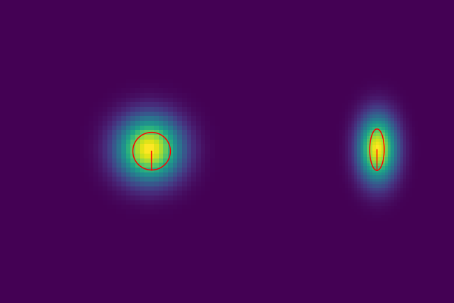
The problem arises, when the image content, e.g. 3 blobs on the figure below are situated close to each other, so under the tilt transform the merge into a single blob. So it is not the shape of region, which is detected incorrectly, but the center of the features themselves. For clarity, we omited affine shape estimation on the image below.
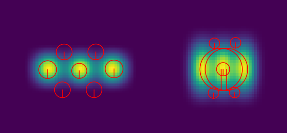
ASIFT: brute-force affine view synthesis
So, to solve the problem explained above, Morel & Yu proposed to do a lot affine warps of each image, as shown on the Figure below, as match each view against all others, which is \(O(n^2)\) complexity, where \(n\) is number of views generated.
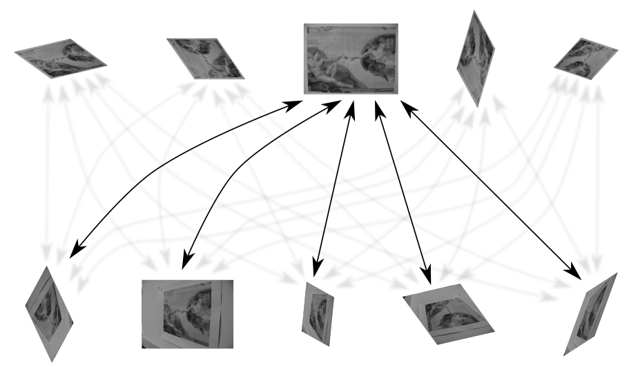
The motivation do doing so it that assuming, original image to be a fronto-parallel one, to cover viewsphere really dense, as shown in the Figure below.
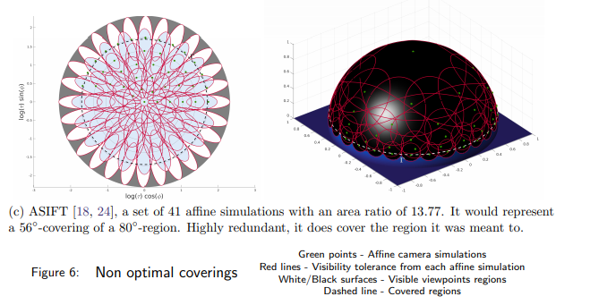
This leads to impressive performance on a very challenging image pairs, see an example below
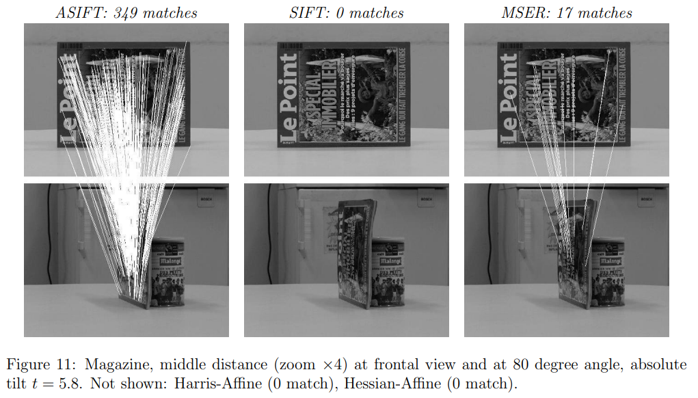
In this section I have used great illustrations done by Mariano Rodríguez for his paper “Fast Affine Invariant Image Matching” . Please, checkout his blog.
MODS: do as little as possible
The main drawback of ASIFT algorithm is a huge computational cost: 82 views are generated regardless of the image pair difficulty. To overcome this, we proposed MODS algorithm: Matching with On-Demand Synthesis.
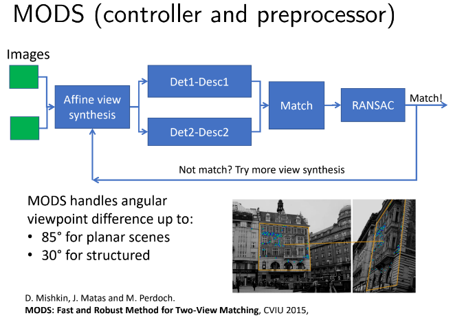
One starts with the fastest detector-descriptor without view synthesys and then uses more and more computationally expensive methods if needed. Moreover, by using affine-covariant detectors like MSER or Hessian-Affine, one could synthetise significantly less views, saving computations spent on local descriptor and matching.
This, together with FGINN matching strategy, specifically designed for the handling re-detections, MODS is able to match more challenging image pairs in less time than ASIFT.
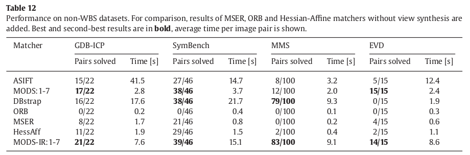
Why does affine synthesis help?
Despite that ASIFT and other view-synthesis based approaches are know more than decade, we are not aware of a study, why does affine synthesis helps in practice. Could one get a similar performance without view synthesis? Specificallly:
- May it be that the most of improvements come from the fact that we have much more features? That is why we fix the number of features for all approaches.
- Some regions from ASIFT, when reprojected to the original image, are quite narrow. Could we get them just by removing edge-like feature filtering, which is done in SIFT, Hessian and other detectors. Denoted +edge
- Instead of doing affine view synthesis, one could directly use the same affine parameters to get the affine regions to describe, so the each keypoint would have several associated regions+descriptors. Denoted +MD
- Using AffNet to directly estimated local affine shape without multiple descriptors. Denoted +AffNet
- Combine (1), (2) and (3).
So, we did the study on HPatches Sequences dataset, the hardest image pairs (1-6) of viewpoint subset. The metric is similar to one used in the “Image Matching across Wide Baselines: From Paper to Practice” and CVPR 2020 RANSAC in 2020 - mean average accuracy of the estimated homography.

We run Hessian detector with RootSIFT descriptor, FLANN matching and LO-RANSAC, as implemented in MODS. Features are sorted according the the detector response and their total number is clipped to 2048 or 8000 to ensure that the improvements do not come from just having more features.
Note, that we do not study, if view synthesis helps for the regular image pairs - it might actually hurt performance, similarly to affine features. Instead we are focusing on the case, when view synthesis definitely helps: matching obscure views of the mostly planar scenes.
8000 feature budget
Results are in Figure below. Indeed, all of the factors: detecting more edge-like features, having multiple descriptors or better affine shape improve results over the plain Hessian detector, but even all of the combined are not good enough to match performance of the affine view synthesis + plain Hessian detector.
But the best setup is to use both Hessian-AffNet and view synthesis.
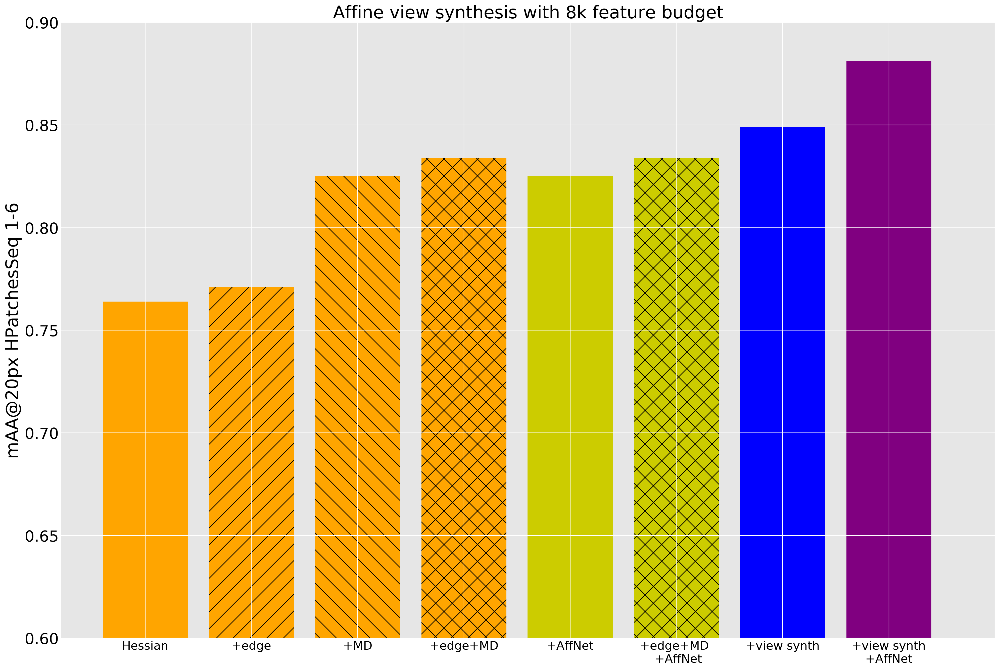
2048 feature budget
The picture is a bit different in a small feature budget: neither multiple-(affine)-descriptors per keypoint, nor allowing edge-like feature help. From other hand, affine view synthesis still improves results of the Hessian. And, again, the best performance is achieved with combination of view synthesis and AffNet shape estimation.
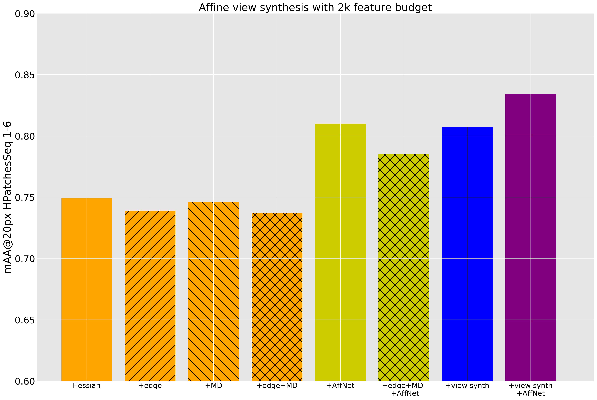
Summary
Affine view synthesis helps for matching challenging image pairs and its improvement are not just because of more local features used. It can be done effective and efficient – in the iterative MODS framework.
References
[SingleImage3dRec2015] J.L. Schonberger, F. Radenovic, O. Chum et al., ``From Single Image Query to Detailed 3D Reconstruction’’, Proceedings of the IEEE Conference on Computer Vision and Pattern Recognition (CVPR), June 2015.
[AffNet2018] D. Mishkin, F. Radenovic and J. Matas, ``Repeatability is Not Enough: Learning Affine Regions via Discriminability’’, ECCV, 2018.
[MSER2002] J. Matas, O. Chum, M. Urban et al., ``Robust Wide Baseline Stereo from Maximally Stable Extrema Regions’’, BMVC, 2002.
[LostInPast2015] Fernando Basura, Tommasi Tatiana and Tuytelaars Tinne, ``Location recognition over large time lags’’, Computer Vision and Image Understanding, vol. 139, number , pp. , 2015.
[AffineTree2006] Lepetit Vincent and Fua Pascal, ``Keypoint Recognition Using Randomized Trees’’, IEEE Trans. Pattern Anal. Mach. Intell., vol. 28, number 9, pp. , sep 2006.
[ASIFT2009] Morel Jean-Michel and Yu Guoshen, ``ASIFT: A New Framework for Fully Affine Invariant Image Comparison’’, SIAM J. Img. Sci., vol. 2, number 2, pp. , apr 2009.
[FastASIFT2018] Rodríguez Mariano, Delon Julie and Morel Jean-Michel, ``Fast Affine Invariant Image Matching’’, Image Processing On Line, vol. 8, number , pp. , 2018.
[MODS2015] Mishkin Dmytro, Matas Jiri and Perdoch Michal, ``MODS: Fast and robust method for two-view matching ’’, Computer Vision and Image Understanding , vol. , number , pp. , 2015.
Everything you (didn’t) want to know about image matching